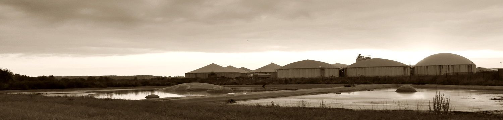

Bewegte Bilder

Nobelpreisträger: Mastanlage ist „globaler Wahnsinn"
Sie werden nicht müde, um gegen den Bau der Ferkelaufzuchtanlage in Alt Tellin zu demonstrieren.
Bereits zum 80. Mal trafen sich Mitglieder und Sympathisanten der Bürgerinitiative „Rettet das Landleben am Tollensetal".
Ulrike Rosenstädt Nordkurier
Video auf YouTube: https://www.youtube.com/watch?v=U5C_R4ConOs&feature=plcp ↗
Vor Europas größter Sauenanlage in Alt Tellin von Schweinezüchter Straathof ist ein 6 Meter hohes rosafarbenes Protestkreuz errichtet worden. Einweihung und Kundgebung mit live Musik -KRACH- Rock'n'Soul aus Greifswald
Video auf YouTube: https://www.youtube.com/watch?v=hMeUbiXwdOM ↗
...